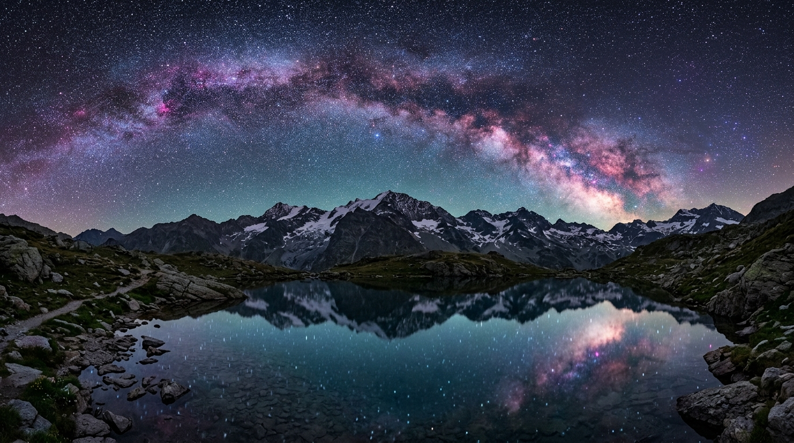
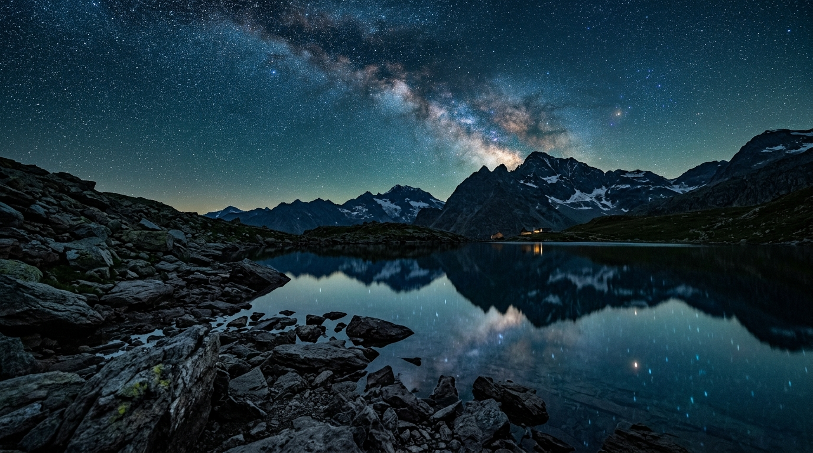

1. Il Potere dell'Apertura f/1.4 nell'Astrofotografia
Tradizionalmente, i fotografi di paesaggio notturno hanno sempre dovuto accettare un compromesso tra campo visivo e luminosità, affidandosi a zoom f/2.8 o a fissi f/1.8 da 20mm. Il 14mm f/1.4 Art cambia completamente le regole del gioco. Rispetto ad un obiettivo f/2.8, questa lente raccoglie **ben il 200% in più di luce** nello stesso intervallo di tempo.
Cosa significa questo sul campo? Significa poter scattare a **ISO 1600 invece di ISO 6400**, riducendo drasticamente il rumore digitale del sensore e conservando una gamma dinamica ed una fedeltà cromatica straordinarie sia sulle nebulose della Via Lattea sia sui dettagli del primo piano montuoso.

2. Correzione del Coma ed incisione ai Bordi
La sfida tecnica più complessa nella progettazione di un 14mm f/1.4 è il controllo del coma sagittale — l'aberrazione che trasforma le stelle ai bordi del fotogramma in comete o sagome deformate a forma di "ali di gabbiano".
SIGMA ha risolto questo problema inserendo un complesso schema ottico da 19 elementi in 15 gruppi, tra cui 1 elemento di vetro FLD (a bassissima dispersione), 3 elementi SLD e ben 4 lenti asferiche. Il risultato è semplicemente sbalorditivo: persino scattando a **tutta apertura ad f/1.4**, le stelle negli angoli estremi dell'immagine rimangono dei punti di luce perfettamente sferici e definiti.

3. Caratteristiche Progettate su Misura per gli Astrofotografi
Oltre alle prestazioni ottiche pure, il SIGMA 14mm f/1.4 Art integra accorgimenti meccanici pensati appositamente per chi lavora al buio ed al freddo:
- 🔒 MFL Switch (Manual Focus Lock): Disabilita fisicamente la ghiera di messa a fuoco una volta trovato l'infinito stellare, impedendo qualsiasi spostamento accidentale al buio.
- 🔥 Holder per Scaldalente Lens Heater Retainer: Una scanalatura speciale sulla parte anteriore per bloccare le fasce riscaldanti anti-condensa senza che scivolino sulla lente frontale.
- 🎞️ Portafiltri Posteriore: Consente di inserire filtri a gelatina o filtri per la dispersione stellare senza dover montare ingombranti portafiltri a lastra anteriori.
4. Verdetto e Conclusioni
Il SIGMA 14mm f/1.4 DG DN Art è molto più di un semplice obiettivo: è uno strumento espressivo senza precedenti che ridefinisce le possibilità della fotografia notturna. Chiunque desideri catturare il cielo stellato con la massima qualità d'immagine possibile oggi non troverà un'alternativa all'altezza su nessun altro sistema.